Background
Sergei Mikhailovich Prokudin-Gorskii (1863-1944) was a man well ahead of his time.
Convinced, as early as 1907, that color photography was the wave of the future, he won Tzar's special permission to travel across the vast Russian Empire and take color photographs of everything he saw including the only color portrait of Leo Tolstoy.
And he really photographed everything: people, buildings, landscapes, railroads, bridges... thousands of color pictures!
His idea was simple: record three exposures of every scene onto a glass plate using a red, a green, and a blue filter. Luckily, his RGB glass plate negatives, capturing the last years of the Russian Empire, survived and were purchased in 1948 by the Library of Congress.
The LoC has recently digitized the negatives and made them available on-line.
Goal
The goal of this assignment is to take the digitized Prokudin-Gorskii glass plate images and, using image processing techniques, automatically produce a color image with as few visual artifacts as possible.
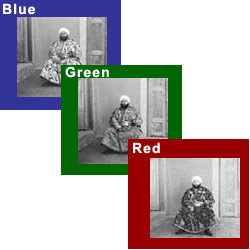
Original Color Photography

Output

Original Color Photography
Approach
Non-Pyramid Alignment Method
In the initial phase of the project, I employed a straightforward alignment technique. This method involved the following key steps:
Metric Method: I tested two different metrics for alignment, the L2 norm and Normalized Cross-Correlation (NCC). After comparison, NCC is better on average for our data.
Cropping: To focus on the central portion of the images and reduce the influence of dark margins, I implemented a cropping method that removes 10% from each edge.
Exhaustive Search: I aligned the green and red channels to the blue channel by exhaustively searching over a window of displacements from -15 to +15 pixels. The best alignment would be found by the highest NCC score, which reflects the optimal overlap of color channels.
This method works on images with small size, and it will take too long when implemneted on large-size images.
Pyramid Alignment Method
For handling larger and more complex images, I used the pyramid-based alignment method to enhance both the speed and accuracy:
Image Pyramid Construction: Starting with the original image, I construct a series of smaller images (pyramids), each reduced in size by a factor of 2 from the previous one.
Multi-Level Alignment: Alignment starts at the coarsest level of the pyramid and progresses to finer levels. At each level, we perform a localized search around the best displacement found at the previous level, adjusting our search range to ±10 pixels to fine-tune the alignment.
Concurrency Optimization: Utilizing Python's ThreadPoolExecutor, I can concurrently compute the displacements for the green and red channels relative to the blue channel. This parallel processing significantly cuts down on computation time.
This pyramid approach effectively handles most of the larger .tif images. It didn't work well on the Empir image, the red channel alignment was consistently incorrect.
To address the issue, I changed the alignment method to the Structural Similarity Index (SSIM). Although running this method takes much more time, it successfully aligns the Empir image.
SSIM
Results
Results without Pyramid Method on small JPG Images
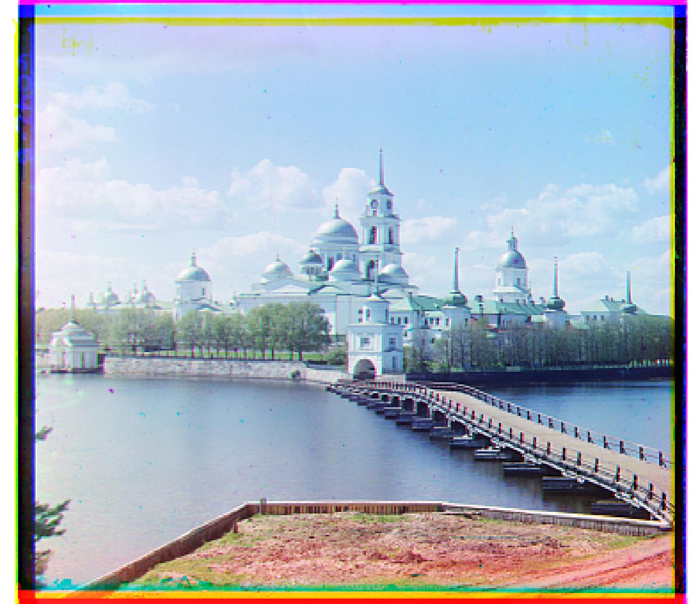
G: (-3, 2), R: (3, 2)
Results with Pyramid Method on Large TIFF Images
G: (50, 23), R: (105, 40)
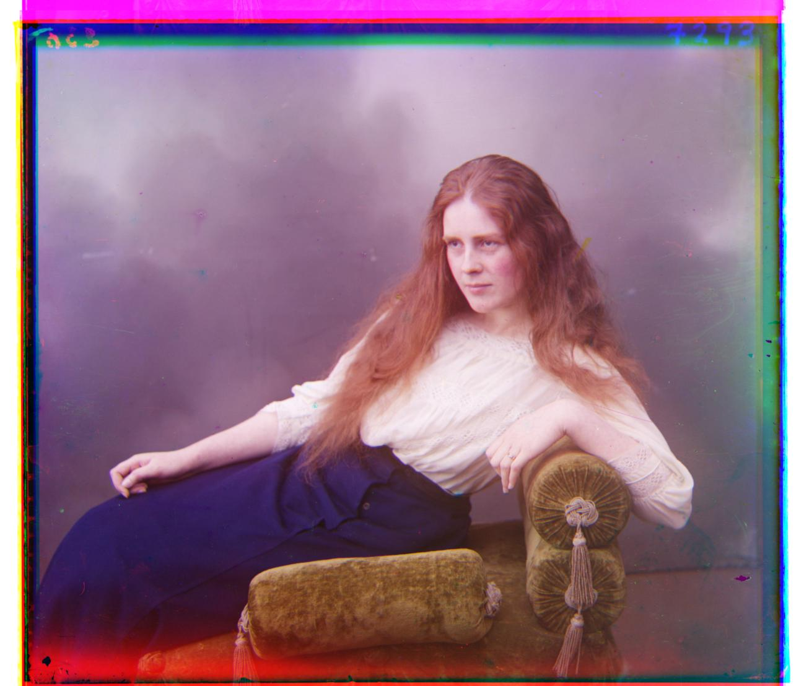
G: (59, 16), R: (124, 13)
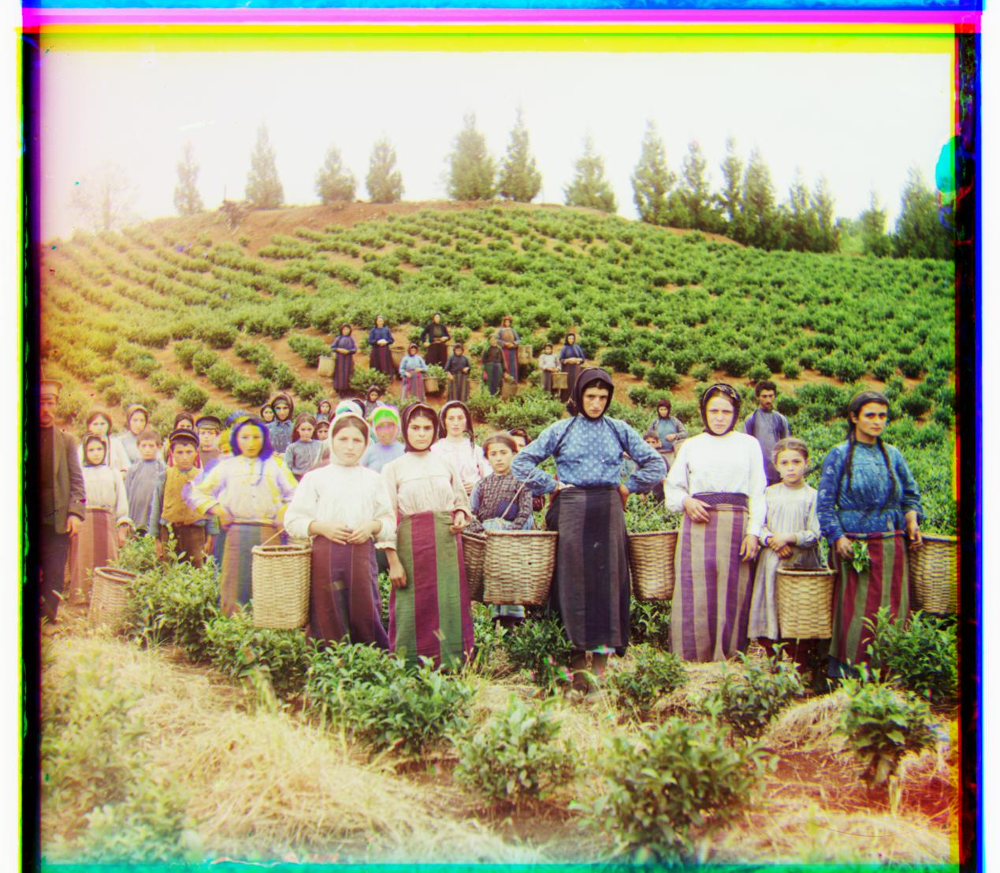
G: (41, 17), R: (89, 23)
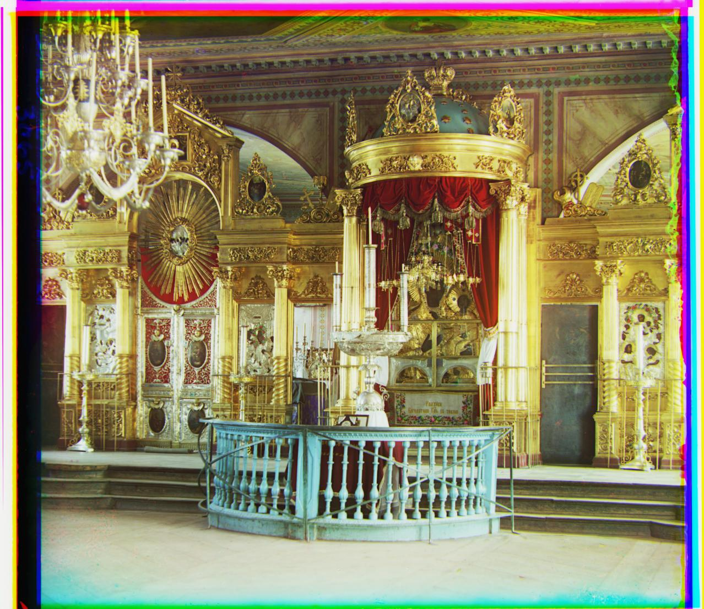
G: (81, 10), R: (178, 13)
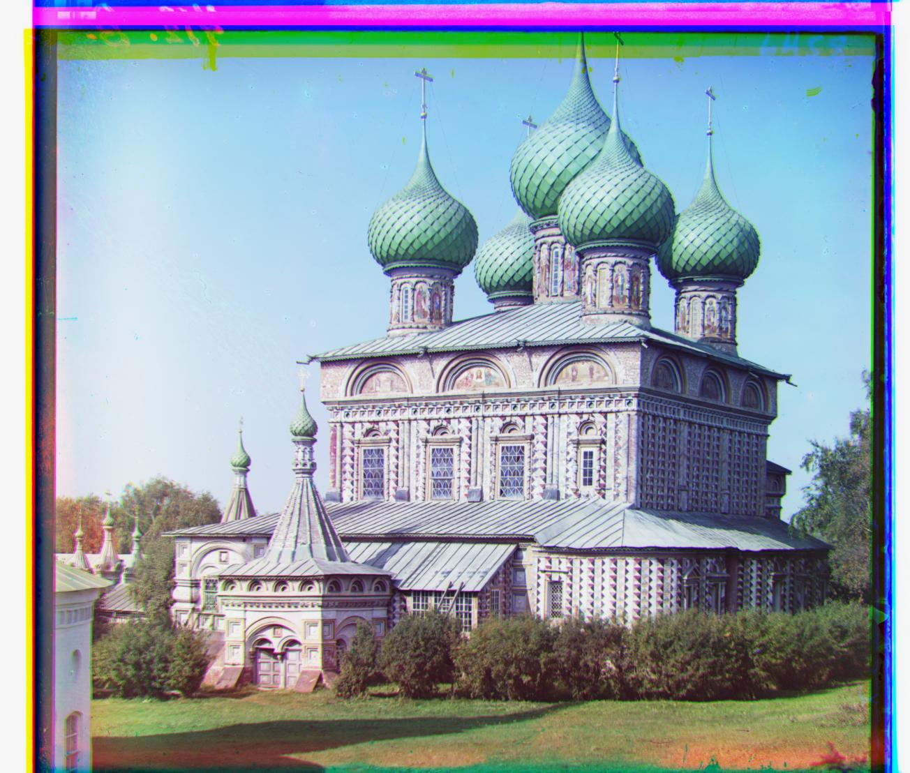
G: (51, 26), R: (108, 36)
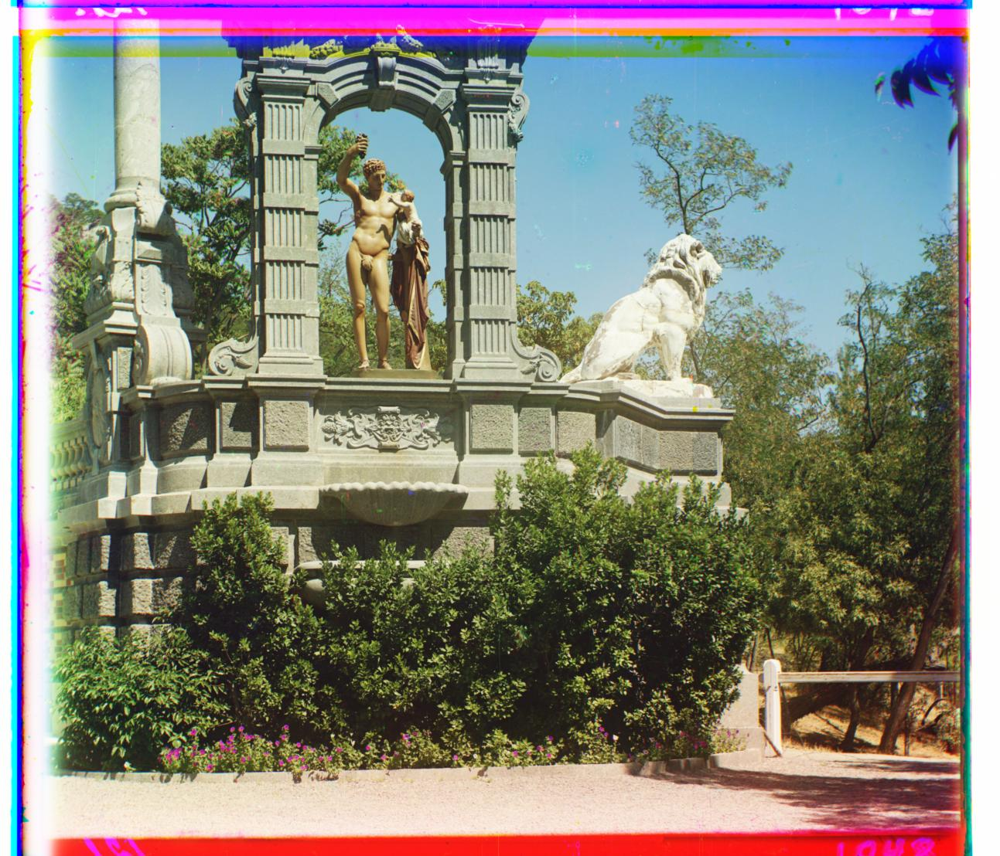
G: (33, -11), R: (140, -27)
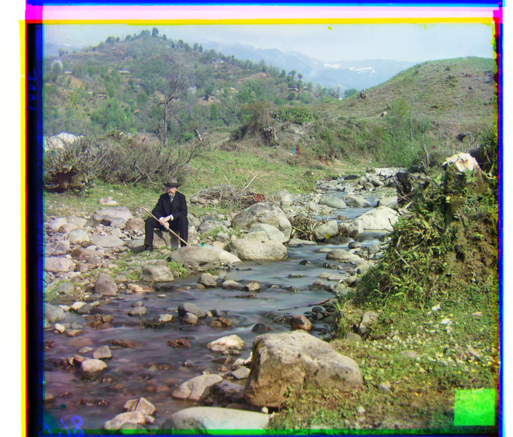
G: (78, 29), R: (176, 37)
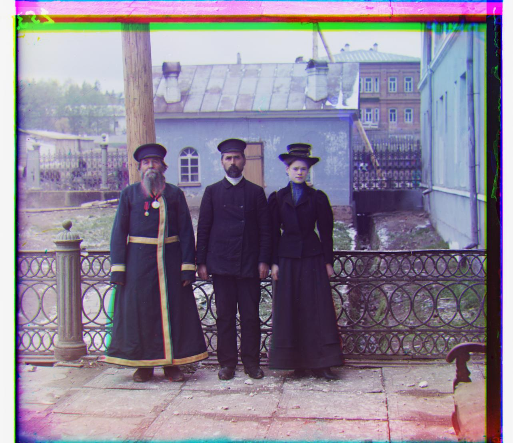
G: (53, -14), R: (112, 11)
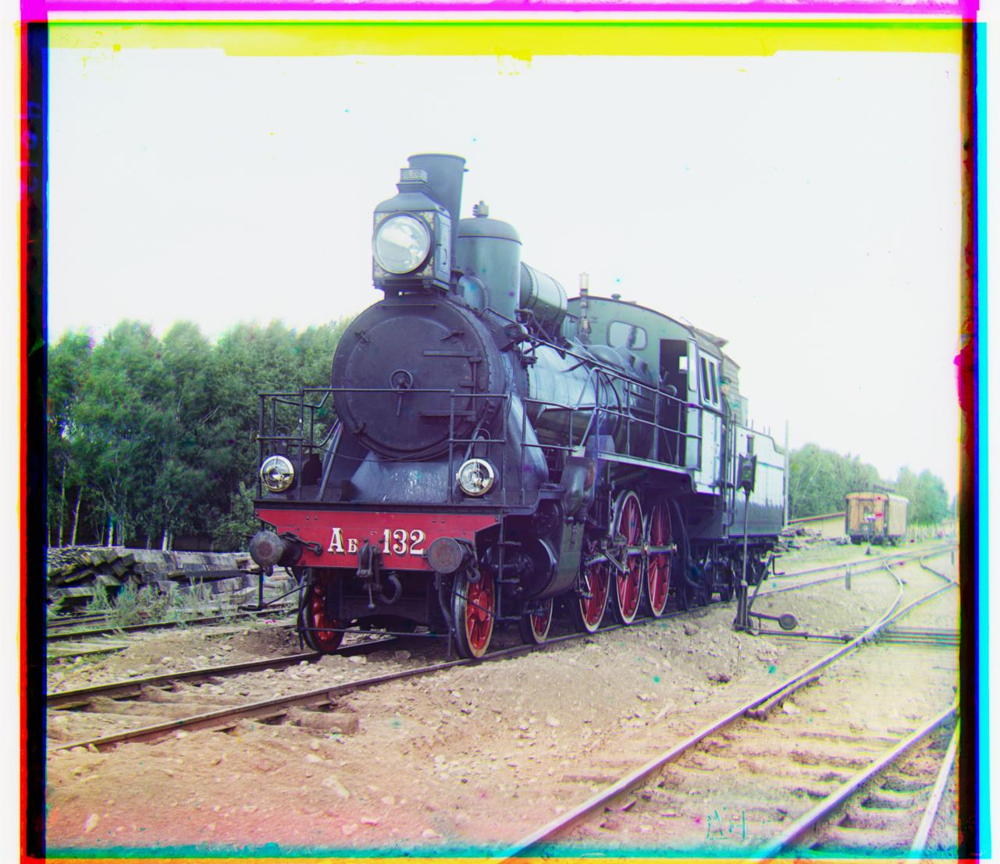
G: (42, 5), R: (87, 32)
Extra Results
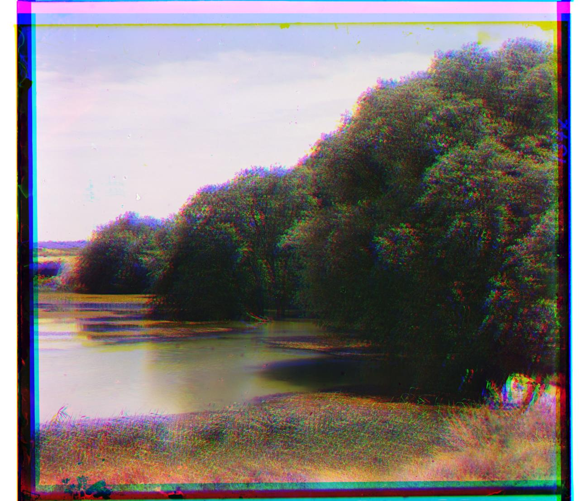
G: (10, 0), R: (88, 0)
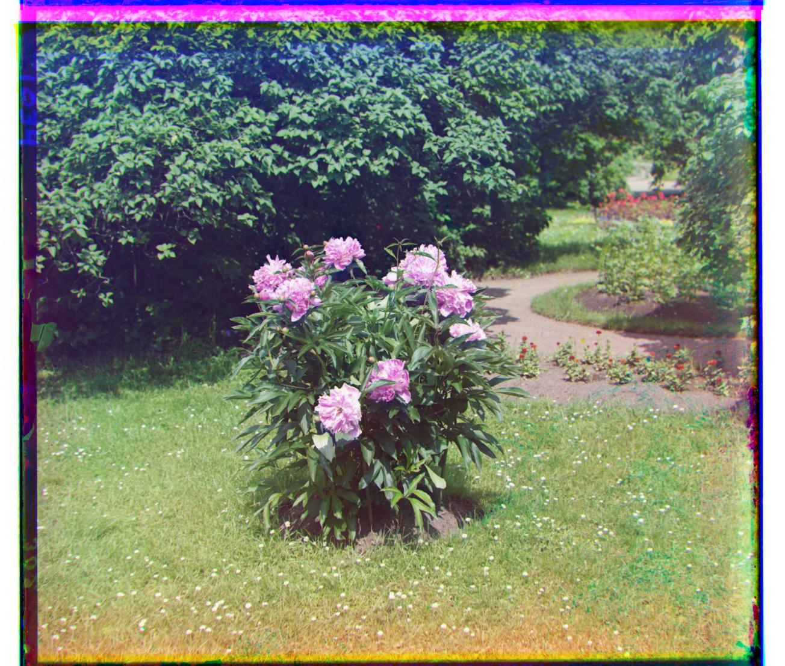
G: (51, 3), R: (104, -6)
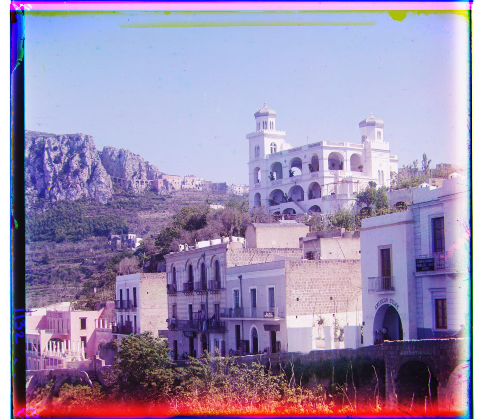
G: (32, -16), R: (78, -25)
Bells & Whistles (Extra Credit)
Auto Contrast
Initially, the image is loaded and converted from its standard BGR color format to YUV, which separates brightness from color components.
This allows me to modify the image's luminance without affecting its colors.
The brightness levels are distributed evenly using histogram equalization, improving the image's contrast.
Finally, the image is converted back to BGR format to get correct colot.
Original